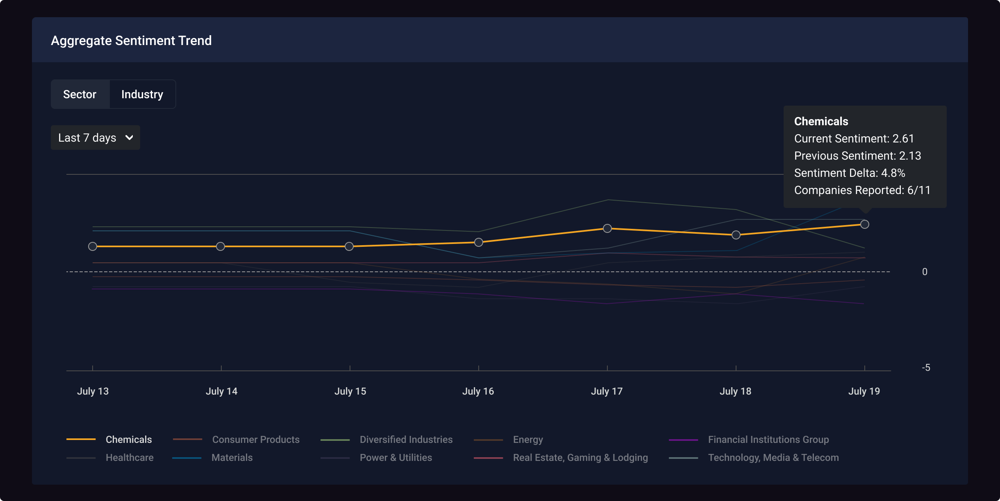
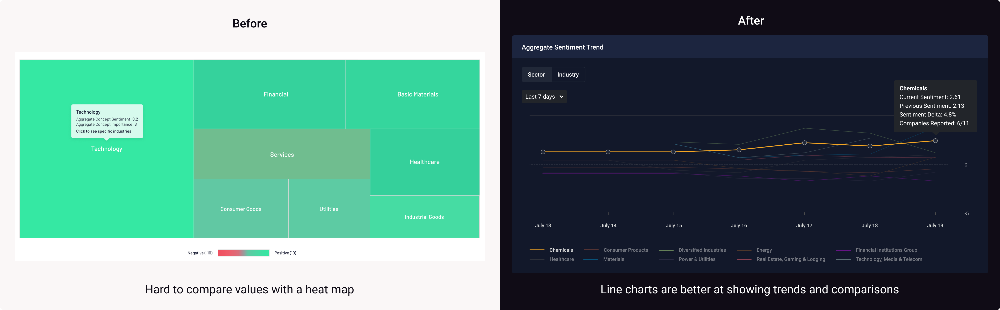
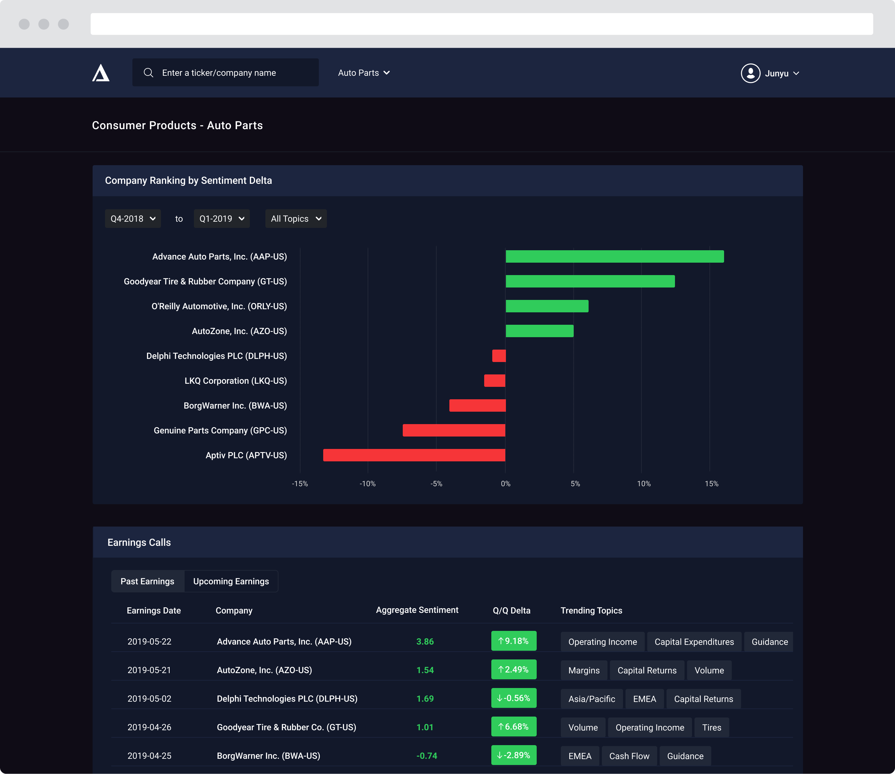
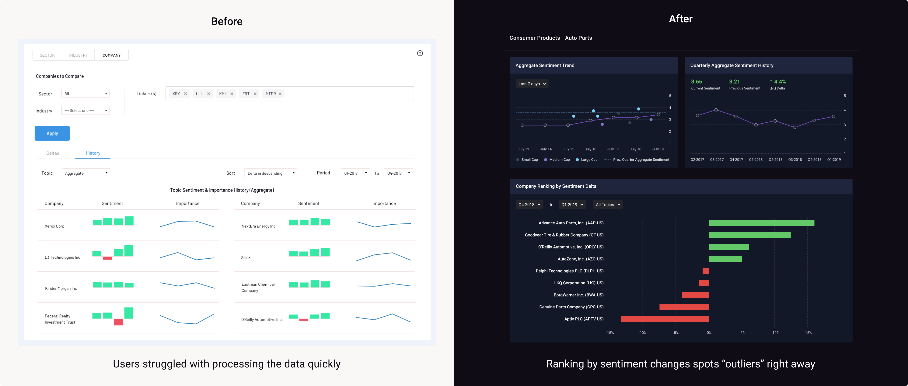
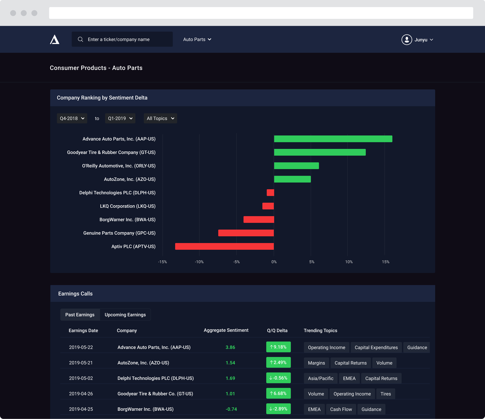
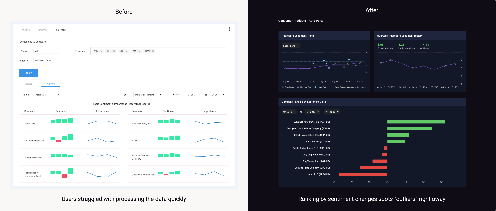

Findings from beta testing
With the early design iterations, we were able to identify some key insights into how users would use the product to find what they need in the investment process:
1
Context is important in the sentiment for a topic
Users found it difficult to trust the system on sentiment scoring on a topic or company without knowing the context in the transcript. They needed to look at the corresponding paragraphs to validate.
2
Sentiment changes matter more than the sentiment itself
Since companies always try to sound positive in earnings calls, the sentiment on a topic in a given quarter does not provide much on where the company is heading. It’s the shift in sentiment from quarter to quarter that the users care more about.
FINAL DESIGN
Discovering hidden nuances that move the markets
Topic Deltas reads through earnings transcripts in a granular bottom-up way measuring topical sentiment changes across calls and between industry peers, giving investors the unique knowledge that scales their expertise.
Monitoring the important trends at a glance
One of the biggest challenges for analysts or investors is tracking the macro trends across sectors, industries, and companies. The three widgets on the top allow users to find what's trending from a macro-level perspective and decide where to pay attention to.
Capturing the dynamic change among sectors and industries as new calls come in was not easy. In the early iterations, we used a heat map where different shades of green and red represent positive and negative sentiment changes. After a couple of customer meetings and testings, we found that users cared more about which sectors or industries had more changes than others.
 Saving hours of manual analysis with sentiment aggregation and comparisons
Topic Deltas analyzes topical and aggregate sentiments for each company right after the earnings call. Users can gain an edge by finding out what companies and topics have the most sentiment changes from the last quarter as soon as the company announces.

All the data users need in one place
Topic Deltas identifies key themes by comparing and contrasting granular topics over time and against those referenced by industry peers. What's driving the industry markets? How the industry has evolved over time? Who has under or outperformed? Users can find all of the important information in one place.
 



Surfacing signals on macro and micro levels
Topic Deltas covers all the topical sentiments within an industry and allows users to dig deeper into the sentiment history in the previous quarters for every topic and company.
Gaining user trust with transparency
On the Earnings Calls page, users can compare and contrast the key statements in the call classified by different topics, as well as the historical performance for each topic. The semantic details of nuanced language not only provide the transparency of how the machine learning model works behind the scenes, but also enable investors to find patterns that were previously invisible.
REFLECTIONS
A beginner’s mindset
I had little knowledge about investing prior to joining the team, and this project had been a challenging but rewarding learning experience for me. I learned to lean on the experts on my team and clients to get myself familiar with the domain and validate my assumptions during design iterations. Having a beginner’s mindset and being comfortable asking for help allowed me to understand the problems quickly and deliver solutions that meet both user and business expectations.